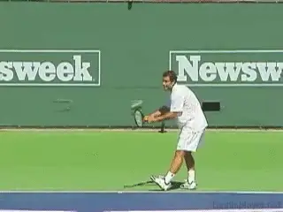
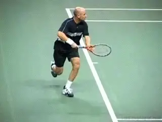
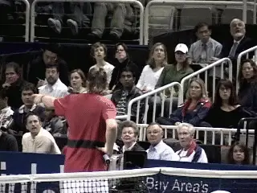
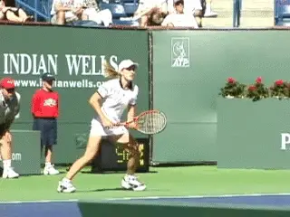
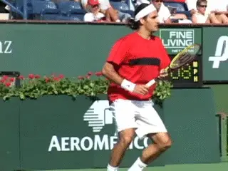
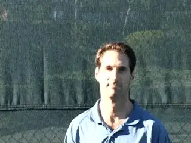
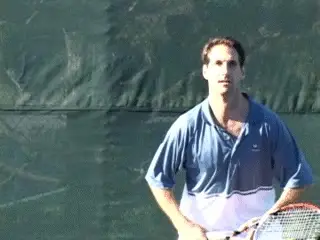
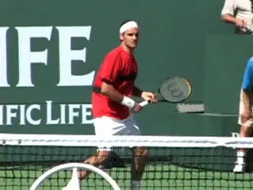
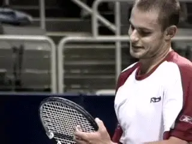

Finding Pleasure in Pressure¶
Finding Pleasure in Pressure¶
Jeff Greenwald¶

Pete Sampras: relaxed and able to make big shots under pressure.
I'm often asked how the best players in the world compete so well when the stakes are so high. \"How do they deal with the stress with so much on the line?\" Answer: They learn to thrive on it. They don't experience pressure in the same way most people do.
Literally, the top players know how to find pleasure in pressure. Finding pleasure in pressure? It's a concept most players have never considered, must less experienced in an important match.
In this article I will explore this mind-set, the internal emotional climate, and especially, the physical sensations in the body associated with finding pleasure under pressure. Then let's look at a practical training method that can help you create this same powerful constellation of thought, emotion, and sensation in your own matches.
Do you know what Pete Sampras told Inside Tennis after his retirement that he missed the most about the game? He said, \"I miss feeling so nervous that I would throw up before the finals of Wimbledon.\"
So don't think that the top players don't get nervous. They do--very nervous at times. Yet Pete was one of the most relaxed players in the history of tennis when the pressure was on. He came up with big shots that changed matches time after time after time. So something changed dramatically between the pre-match feeling of acute nervousness and how he felt when it mattered most.

How do top players push themselves to make shot after shot?
To give another historic example, think back to Andre Agassi and Marcos Baghdatis both fighting off match points in the fifth set in of Agassi's last U.S.Open. Both players hit winner after winner with their bodies pushed to the limit. It's another example of top players seeming to thrive in a very tense situation.
Skill and training naturally play a big part in the ability to execute under pressure. But the real secret is embracing pressure, learning to stay sufficiently relaxed physically, and finally, knowing how to transform your nervous energy into a positive force.
This is what I mean by finding pleasure in pressure. It is the only real way to improve your odds of winning that 5--4 game in the third set.
At almost all other levels players' experiences are usually the complete opposite. Big moments are the times most players like the least, and when they are most likely to crumble.

Getting distracted by a bad call is one way to escape from pressure.
Lower-level players often say (and may truly believe) that they want to win, but at a deeper emotional level, what they really want is to escape from uncomfortable emotions in a tight situation as quickly as possible.
For most players, pressure doesn't feel pleasurable, it feels overwhelming. This is because their bodies are flooded with hormones associated with stress and fear. The only way to get away from these feelings is to get out of the match or shift the focus away from how they feel to something external happening around them.
So, they try impossible shots, or they choke, or they tank. Or they get angry. Or they become distracted and upset by extraneous factors--the personality of the opponent, line calls, officials, spectators, etc.
Subjective Pressure
The truth is that pressure is subjective. It all comes down to what pressure means and feels like to you. How pressure affects you depends on your belief in your ability to handle the situation. And how you feel inside your own body.

**Try to tense up with your tongue hanging out of your mouth like Michael.**
Elite athletes aren't overwhelmed because they aren't feeling the same way as the average player. In his book, Driven From Within, Michael Jordan says, \"The day I don't feel nervous is the day I know I must quit the game of basketball.\"
But, regardless of his alleged nerves, Michael always wanted the ball. He may have been nervous before games like Pete Sampras. But look at the picture of Michael driving the lane. He was so relaxed his tongue was hanging out of his mouth. Just try doing that and then tensing up. It's impossible.
The Value of Tension
To embrace and enjoy pressure, you first need to acknowledge and accept that you will at times feel physical tension. Don't try to deny this or cover it up. Pete Sampras had no problem admitting it. So don't try to deny your own fears.
You need to understand that this tension, even acute nervous tension, can become the catalyst to peak performance. At the deepest level, it means that you care, that you are engaged in the moment, and that the ongoing events matter to you.
It also means you have a powerful energy source available if you can only use it in the right way. The secret is to accept the fear and nervous energy, but then to learn relax physically and transform it into positive energy. This is what the top players do instinctively.

Your nervous tension can become a powerful source of positive energy.
We know it doesn't feel good when we're tense. When we get tense and use too many muscles when we hit the ball, we don't execute our shots well and we don't play to our potential. But just knowing this doesn't change anything.
So is it possible to learn to change it? The answer is yes. You can train yourself to change your attitude and then change the way you feel inside your own body under pressure.
Train Yourself to Be Loose
In his groundbreaking book, The Relaxation Response, world-renowned doctor Herbert Benson has proven that we are capable of learning how to relax ourselves deeply. This goes for tennis too. The fact is that any player can learn to reduce his muscle tension and lower is heart rate. Once you relax sufficiently, instead of becoming tighter and tighter, you can use your energy to produce your best tennis.
The secret is a systematic process Benson developed based on heightening the awareness of our own bodies. It is known as Progressive Muscle Relaxation (PMR). Through Benson's research, it has been proven that people who practice his techniques can significantly shift the way their bodies respond to stress in just six weeks.

Federer, so fluid and relaxed, it looks easy.
Progressive muscle relaxation has been accepted in hospitals worldwide as the most effective technique to lower blood pressure and reduce stress. Its application in sports settings has also grown over the years and is a popular intervention used to reduce performance anxiety.
The truth is no player can simply command his body to relax. But if you practice progressive muscle relaxation on a regular basis, you will find that in general you simply won't get as tense as you once did under pressure. And when you do find yourself tightening up, you will be able to identify specific tension areas and call up a physical memory of what it is like to relax them.
Progressive Relaxation Process
How does it work? The steps below will guide you through progressive muscle relaxation. The process is simple. Find a place where you will not be disturbed for at least ten to fifteen minutes. If possible, lie down on the floor or a bed. But you can also work the process sitting or even standing up.

You can use progressive Relaxation techniques on the court.
First take a few slow, relaxed, deep breaths. Now focusing on one part of your body at a time. Then contract your muscles in that area and hold the tension for 7 seconds. Now consciously relax the same area for 15 seconds.
When you relax the muscles, take deep breaths (in through your nose, out through your mouth). During this 15 seconds observe the difference between the tension you felt previously and the way your more relaxed muscles feel now. It's critical to pinpoint that physical difference.
Here are the areas of the body and the order in which to work them. The sequence again is Tense for 7 seconds, Relax for 15 seconds:
**Tense your arms and hands. Relax. **
**Tense your stomach. Relax. **
**Shrug your shoulders to your ears. Relax. **
**Bite down and tense your jaw. Relax. **
**Tense your entire face. Relax. **
**Tense your quads. Relax. **
**Tense your calves. Relax. **
**Tense your entire body. Relax. **
Now pair the feelings you have in your body during the relaxation phase with a cue word or words. Cue words will form the basis for recalling the relaxed feelings on the court. Some basic examples are: \"Loose, Calm, Excited, Energized,\" etc, etc. You should adopt the one or ones that feel right for you, or better yet, create your own.
If you wish, you can repeat the process twice for each specific area before moving on to the next area. Or you can go through the whole process once for each area and then go back and repeat the entire sequence. With practice you will develop the systematic ability to make a noticeable shift in your tension level.

To execute under pressure, you need to look forward to pressure.
As you get more comfortable with the process, expand the cue words to phrases like: \"I enjoy pressure. \"Pressure situations give me the opportunity to play my best,\" \"I love being in this situation,\" etc. Again, create the phrases that are right for you.
Once you get comfortable with the PMR you can take it a step further by adding mental pictures of yourself in situations where you usually feel overwhelmed and too tense to play your best. Try to sense where in your body you become tense based on your new awareness. Now imagine hitting whatever the shot or shot combinations you like most in a loose way.
The image could be following through and hitting deep groundstrokes. Or a first serve to the backhand side. Or an inside in forehand winner. Or a running pass. Or a clutch high forehand volley on a floating ball. Or all of them, or some combination. Personalize these images based on your own game and what you would like to see happen in matches.

Imagine yourself executing patterns the need to win matches.
Go through this whole process 2 or 3 times a week for six weeks. This is the period required for it to have a real effect on your body.
The payoff is on the court. After you become practiced in progressive relaxation, you will probably find that you simply don't get as tense as you once did under pressure. This is because you now have an instinctive feeling of what it's like to keep your body relaxed.
When you do become tight, you will be able to identify the source. Do a quick whole body scan and find the tense areas. Most of the time the biggest culprits are shoulders and arms or the legs. But it's up to you to sense the specific areas for yourself in your individual matches.
Now call up the feelings and images you have created and practiced in your progressive relaxation exercises for those tense areas. Use the relaxed feeling you have developed to drive the execution of the strokes.

Smile to yourself and get ready to channel your energy into the ball.If you are working the process correctly, you will literally feel the tension in your body changing, and this will allow you to access your energy in a positive way. You can do this as needed, or even systematically between points and/or on game changes.
You have developed a powerful tool to help you access your optimal performance state on court. it gives you the potential to experience the joy the pros feel when they come up with clutch shots at the right time.
Next time you go up 5-4 in the third serving and feel a pang of nervous energy, or when you find yourself hoping that your opponent will hand you the match with some loose errors, remind yourself, \"I love this. I wouldn't want to be anywhere else.\" Then smile to yourself as you channel your energy into the ball and watch the ball pass your opponent just when you needed it most.

The Best Tennis of Your Life
Learn how to play with freedom and win more matches! In his new book Jeff Greenwald, an elite international seniors player, coach, and psychotherapist, outlines 50 specific mental strategies to play the best tennis of your life. See how to embrace pressure, maintain confidence, and increase your focus and intensity. Jim Loehr calls Jeff's book: \"a real contribution to the field of applied sports psychology.\"\ \ to Order!

Jeff Greenwald, M.A., MFT is a nationally recognized sport psychology consultant. Jeff has worked as a consultant for the United States Tennis Association and trains numerous players around the world on the mental game. As a player in the men's 35 and over age division he attained an ITF #1 world ranking, as well as the #1 ranking in men's singles and doubles in the United States.
Greenwald is the author of \"The Best Tennis of Your Life\" published by Betterway. to order. Jeff has a private practice based in San Francisco and Marin County, California. He can be reached at 415-640-6928 or by email at jeff@mentaledge.net. You can also visit Jeff's website at www.mentaledge.net.